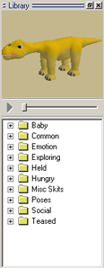
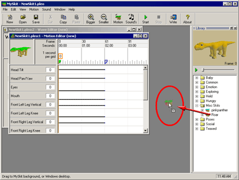
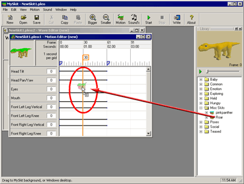
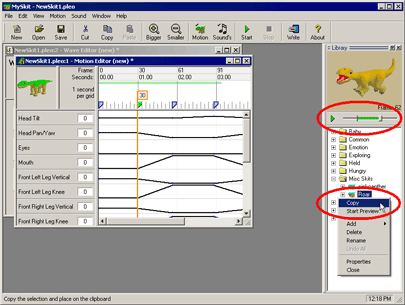
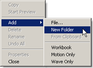
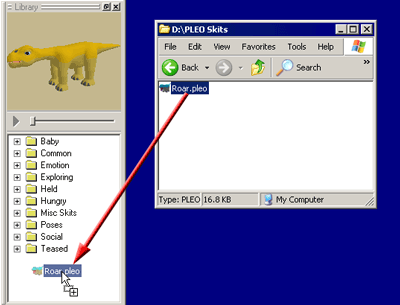
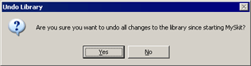

|
|
| MySkit - Chapter 6 -
Reference Library |
|
Contents of this website are freeware and/or copyrighted material, and may not be sold
under any circumstances.
Email: dogsbody@dogsbodynet.com
Home:
https://dogsbodynet.com
|
Table of Contents:
1.0
Introduction
2.0 Install
MySkit
3.0 Performance Files
4.0 Motion Editing
5.0 Wave Sound Editing
6.0 The Reference Library
6.1 Drag into MySkit Desktop
6.2 Drag into Open Document
6.3 Copy/Paste from Library
6.4 Library Management
6.5 Undo Library Changes
7.0 The PLEO Window
8.0 Upload Actions to PLEO
9.0 Specify Preferences
|
6.0 The Reference
Library
MySkit includes a library of skits you can reuse
easily. Sometimes its much easier to create a skit by
reusing bits from others.
Use the preview window on top to browse library entries. You can
add new folders, rename folders
or skits, & add
your own skits to the reference library.
Please note library changes are only saved when you exit MySkit, and
can be undone anytime beforehand.
|
 |
6.1 Drag
into MySkit Desktop
The library supports drag-n-drop to the MySkit desktop.
This will open a new document, containing a copy of the library
entry. If the library entry is a full skit
(motion & sound), then both elements are opened.
|
 |
6.2 Drag
into Open Document
The library supports drag-n-drop
insertion into existing open PLEO documents.
If the library entry contains motion & sound, then elements are
multi-pasted into both open editors of the document.
|
 |
6.3 Copy/Paste
From Library
This method also inserts into
existing open documents.
However, it supports copying just parts of a library skit. If a
small snippet is all you want, copy
it & nothing else.
Press a SHIFT key and select the range of interest on the preview
slider. From
the right-click menu, choose "Copy" (or hit CTRL-C).
|
 |
6.4 Library
Management
The library works much like Windows Explorer. You can copy
files
to/from and within the library. You can also
add/remove folders
using the right click menu.
|  |
6.4.1 Create New
Library Folder
Right click on the library. Select "New Folder".
A new empty folder appears. Click on the folder, or select
"Rename" from the right click menu to assign a meaningful name.
|
6.4.2 Adding Files to the Library
MySkit supports drag-n-drop copying of files into the
library. You
can drag from Window desktop or any folder.
You can also create local copies of library entries. Select an
entry, press CTRL, and drag the copy to its new location.
The Add menu (shown above) also allows adding the current workbook your
editing directly to the library.
|
|

|
6.5 Undo Library
Changes
You can undo all
library changes you've made since starting the MySkit.
The library reverts to its state when you started MySkit.
Library changes are only saved when you exit MySkit.
|
 |
|
|
|
Legalese: These programs are provided AS IS without any warranty, expressed or implied.
This includes without limitation the fitfulness for a particular purpose or
application. People using the software bear all risk
as to its quality and performance. The user of the software
is responsible for any damages whether direct, indirect, special,
incidental or consequential arising from a failure of these programs to operate in
any manner desired. Etc, etc...
"PLEO" is a trademark UGOBE, Inc.
|
|